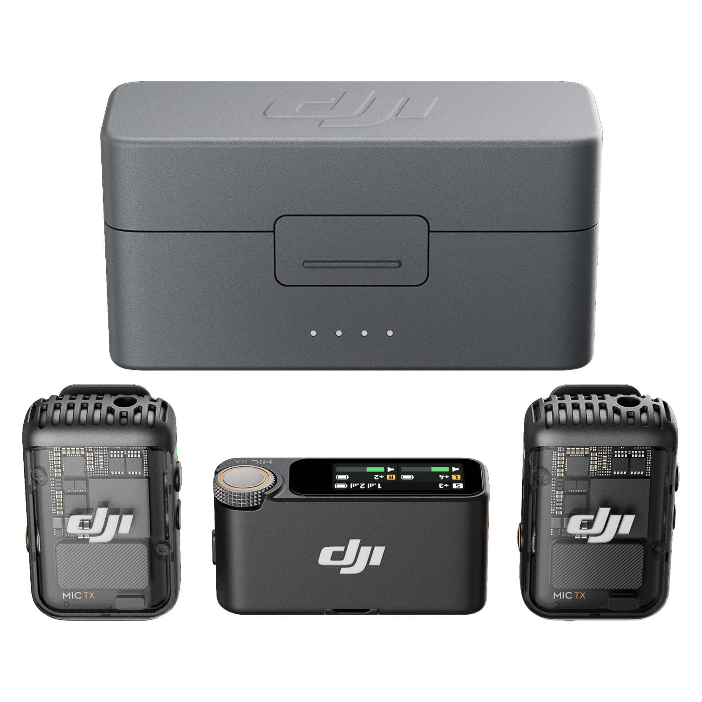

← All Guides
Best Lavalier Microphone 2026: What 4 Reviewers Agree On
Aggregated from 4 YouTube reviews · Updated 2026-10-03

DJI Mic 2
Recommended by 3 of 4 reviewers — Tom's Guide calls it 'fantastic': 32-bit float internal recording, AI noise cancellation and Bluetooth phone recording in one kit.
📊 Quick Comparison
| # | Product | Recommended By | Best For | Price |
|---|
| 1 | DJI Mic 2 | 3/4 reviewers | YouTubers and interview shooters | $199-349 |
| 2 | Hollyland Lark M2S | 1/4 reviewers | Minimal size and weight | $129-149 |
| 3 | Rode Wireless Pro | 1/4 reviewers | Pro features and timecode | $349-399 |
| 4 | DJI Mic Mini | 1/4 reviewers | Budget dual-channel wireless | $79-169 |
💬 Reviewer Consensus
Common Pros
- DJI Mic 2: 32-bit float internal recording + safety track means clipping is effectively impossible (3/4 mention)
- DJI Mic 2: intelligent noise cancellation that handles wind, traffic and crowds in real tests (2/4 mention)
- Hollyland Lark M2S: 7g logo-free transmitters that disappear on camera, ~$139 (1/4 mention)
- Dual-channel 2 TX kits: record two people at once, essential for interviews (2/4 mention)
Common Cons
- DJI Mic 2: premium price; case recharge is a slow 2h 40m (2/4 mention)
- Rode Wireless Pro: costs more than the Mic 2 kit for marginal on-paper gains (1/4 mention)
- DJI Mic Mini: no 32-bit float or pro features of its bigger sibling (1/4 mention)
- Hollyland Lark M2S: creaky charging case; all-plastic build (1/4 mention)
🔍 Detailed Breakdown
DJI Mic 2
🛒 Amazon🛒 WalmartTom's Guide: 'The Mic 2 is fantastic' — AI noise cancellation cleans up challenging environments in real tests, and 32-bit float plus a safety track give pros peace of mind. Direct Bluetooth recording to your phone, no receiver needed.
Connection: USB-C / 3.5mm / Bluetooth
Features: 32-bit float internal recording, intelligent noise cancellation, -6dB safety track
Polar Pattern: Omnidirectional
Sample Rate: 48kHz / 32-bit float
Type: Wireless lavalier (2.4GHz)
Best for: YouTubers and interview shooters - $199-349
Hollyland Lark M2S
🛒 Amazon🛒 Temu🛒 WalmartTechRadar's tiny-wireless benchmark: 7g logo-free transmitters that practically disappear on clothing, 24-bit audio and 300m range for ~$139. The direct rival to the DJI Mic Mini when invisibility matters.
Connection: USB-C / 3.5mm
Features: 7g logo-free transmitters, ENC, 30h battery with case
Polar Pattern: Omnidirectional
Sample Rate: 48kHz/24-bit
Type: Wireless lavalier (2.4GHz)
Best for: Minimal size and weight - $129-149
Rode Wireless Pro
🛒 Amazon🛒 WalmartTom's Guide names it the Mic 2's main competitor: on paper everything the DJI does, slightly better — longer range, more internal storage, an extra hour of battery. Costs a bit more for those marginal gains.
Connection: USB-C / 3.5mm
Features: 32-bit float, timecode sync, 32GB internal recording
Polar Pattern: Omnidirectional
Sample Rate: 48kHz / 32-bit float
Type: Wireless lavalier (2.4GHz)
Best for: Pro features and timecode - $349-399
DJI Mic Mini
🛒 Amazon🛒 Temu🛒 WalmartThe tiny-budget benchmark TechRadar measures rivals against: 10g transmitters, 48-hour case battery and 400m range. Best pick when you want wireless audio that disappears on camera for under $100.
Connection: USB-C / 3.5mm
Features: 10g transmitters, 48h battery, noise cancellation
Polar Pattern: Omnidirectional
Sample Rate: 48kHz/24-bit
Type: Wireless lavalier (2.4GHz)
Best for: Budget dual-channel wireless - $79-169
❓ Frequently Asked Questions
Why is the DJI Mic 2 our top pick?
It's recommended by multiple reviewers for its overall balance of performance, features, and value. See the detailed breakdown above.
📺 Video Sources
Show 4 review videos
📺
TechRadar — DJI Mic 2 review: simply smart first-rate audio
Watch Video📺
Engadget — DJI's Mic 2 now records high-quality audio to your smartphone via Bluetooth
Watch Video📺
TechRadar — Hollyland Lark M2S review: a lightweight and tiny wireless mic kit for content creators
Watch Video